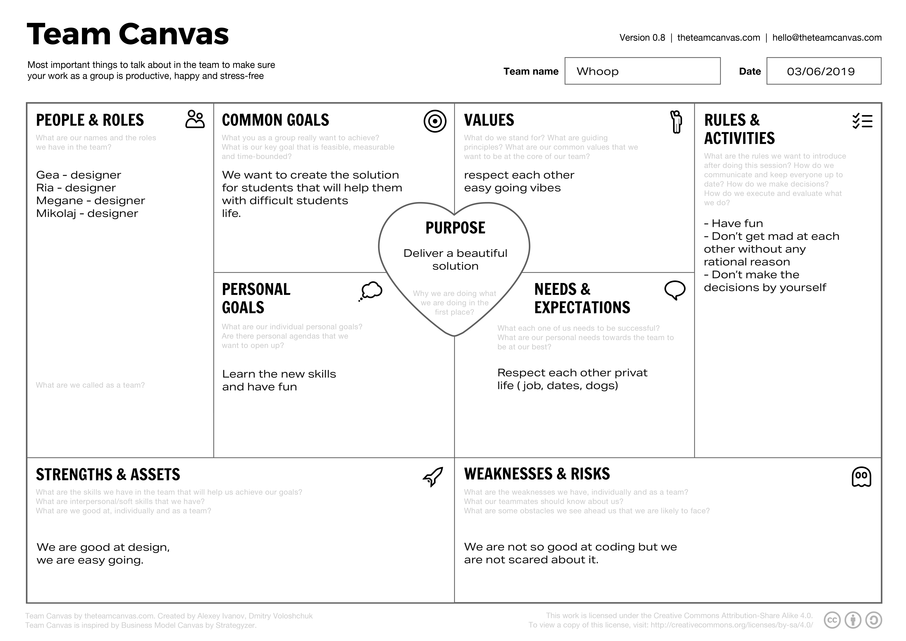
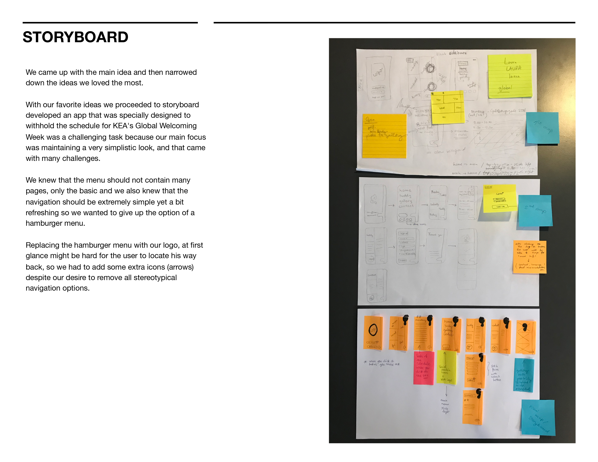
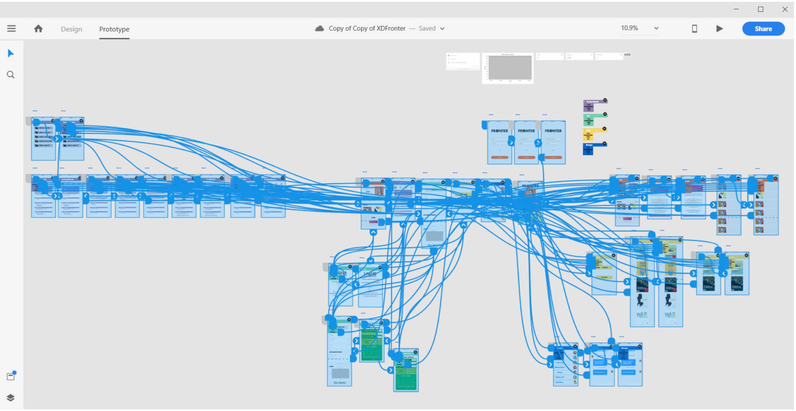

Theme 3 - Basic Content
Team Canvas
Presented Team Canvas is a part of the latest project we have done. Team Canvas helped our group to reach our goal. It was quite easy because of a good preparation. We have written helpful phrases that helped us a lot with implementing the tasks.

Story board
Presented story board is also taken from the lates assigment about the Native App.
As a group we prepared an application that would help organising KEA Global Week. We came up with many amazing ideas during this project but we needed to put them together on the paper. That is why we prepared this story board. It was really helpful to work with because it allows you to focus on the main goal and reach it. Story board is probably not something that I wish to implement in our future projects.

Prototype in XD
Prototype that you can see right now is taken from the Design Sprint. Goal of the project was to "Make students life easier". In order to reach it, we prepared an upgraded version of Fronter, which is a platform for Students and Teachers. After brainstorming, we came with many ideas and created a story board, ithe end we made the idea real with XD. Prototyping with XD allows to visualise the final product before you code it. It helps you to find the weaknesses in the design and user experience flow. I have never worked with XD before I started my studies at KEA, but right now I really apreciate this program. You will find the link to full XD prototype below.
Full XD prototype
